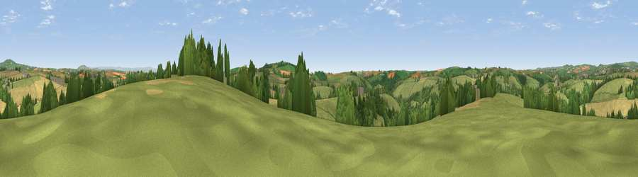

Viewpoint near St Keyne
#17049 in England · top 29% of its area beats it · near St Keyne · access?Where it is
The exact computed spot (SX 26375 61025). Click the marker for map links.
Public access: no public right of way or access land is recorded at this exact spot — it may be on private land. Computed from Natural England's CRoW access layer and OpenStreetMap rights of way — not the legal definitive map. Always verify locally.
The view, rendered

A 360° render of this exact spot computed from the terrain model, tree cover and land cover — summer colours, afternoon light, calibrated against photographs of famous viewpoints. Real trees, hedges and buildings will differ in detail.
The panorama
Grey silhouette: terrain skyline in each direction (720 bearings, Earth curvature and refraction included). Dashed green: skyline with trees (+15 m) and buildings (+8 m) as obstacles. Blue strip: how far the ground is visible on each bearing.
Where the view opens
Wedge length = distance to the farthest visible ground on that bearing (vegetation-aware). Rings at 10, 25 and 50 km.
What fills the view
59% grassland · 26% cropland · 13% woodland · 2% built-up
Angular shares of the visible panorama (visual magnitude), not map area. Landscape diversity 0.43 (0–1 Shannon).
Key numbers
More beautiful places nearby
The staircase of upgrades: each row has a higher view potential than everything closer. Driving times are estimates from straight-line distance, calibrated against real road routing — check an actual route before setting out.
| Place | Direction | Drive | Score |
|---|---|---|---|
| Viewpoint near Menheniot | ENE · 2 km | ~5 min | 57.1 |
| Viewpoint near St Keyne | W · 3 km | ~8 min | 60.3 |
| Bin Down | SSE · 4 km | ~8 min | 80.2 |
| Viewpoint near Seaton | SSE · 7 km | ~14 min | 81.1 |
| Viewpoint near Downderry | SE · 8 km | ~16 min | 81.5 |
| Viewpoint near Downderry | SE · 10 km | ~20 min | 83.5 |
| Viewpoint near Polperro | SSW · 13 km | ~23 min | 83.7 |
| Pencarrow Head | SW · 15 km | ~27 min | 86.0 |
50.42335, -4.44561 · source: screening · position refined by local search. Computed location — check access rights before visiting.